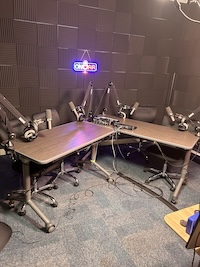
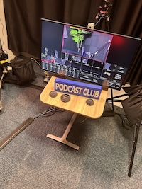

So maybe you're not a paper-and-scissors kind of person, then?
May we interest you with technology?


Imagine for a second that you don't have any followers on Instagram ...
"Oh no! I'm unloved *sadface"
WELL LOOK NO FURTHER! BOOM! MAKERSPACE! WE GOT YOU COVERED! NO MORE "I DON'T HAVE ANY FRIENDS!" With this handy-dandy podcast studio, you can record content for your lonely Instagram page so that some random old guys can follow you. BOOM! "Instagram?" More like "instant-friends!"